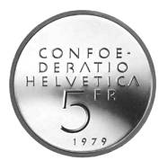

Puzzle 32: Der Münzenwurf zum zweiten

Gedenkmünze Einstein
Anna und Berta werfen wieder einmal (vergleiche auch Puzzle 19) eine Münze.
Anna wirft siebenmal und Berta achtmal.
a) Wie gross ist die Wahrscheinlichkeit, dass Berta dabei mehr 'Zahl' wirft als Anna?
b) Wie gross ist die Wahrscheinlichkeit, dass Berta genau so viel mal 'Zahl' wirft wie Anna?
c) Wie gross ist die Wahrscheinlichkeit, dass Anna dabei mehr 'Zahl' wirft als Berta?
9. Dezember 2006